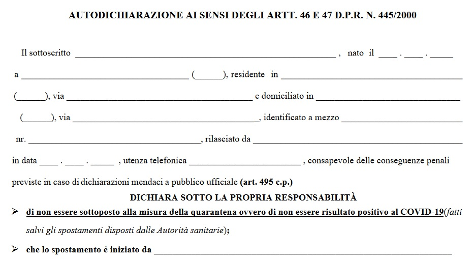
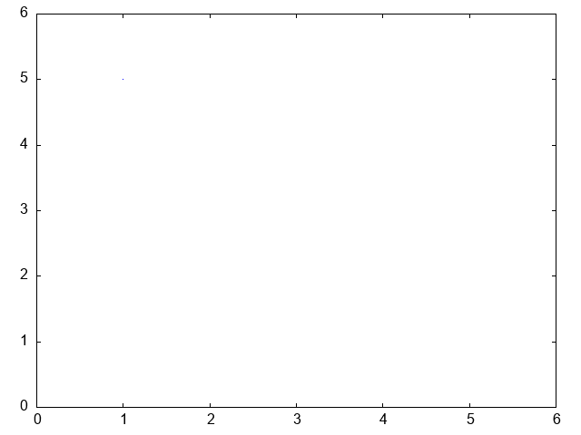

Laboratorio di TNDS – Lezione 4
Maurizio Tomasi (maurizio.tomasi@unimi.it)
Martedì 14 Ottobre 2025
Esercizi per oggi
Link alle risorse online
La spiegazione dettagliata degli esercizi si trova qui: carminati-esercizi-04.html.
Come al solito, queste slides, che forniscono suggerimenti addizionali rispetto alla lezione di teoria, sono disponibili all’indirizzo ziotom78.github.io/tnds-tomasi-notebooks.
Esercizi per oggi
- Esercizio 4.0: Andamento temporale delle temperature di Milano (da consegnare);
- Esercizio 4.1: Misura del rapporto q/m per l’elettrone;
- Esercizio 4.2: Misura della carica e dell’elettrone;
- Esercizio 4.3: Determinazione del cammino minimo.
Esercizio 4.0
Statistiche con stride
L’esercizio richiede di calcolare la media e la deviazione standard usando una stride, ossia considerando solo un elemento ogni N nel vettore.
È un metodo molto usato nelle serie temporali, dove valori consecutivi hanno una correlazione significativa che invaliderebbe l’uso della media e della deviazione standard tout court.
Statistiche con stride
Il mio testo dell’Esercizio 4.0 contiene alcune indicazioni in più;
In particolare, contiene il codice per verificare la correttezza delle nuove funzioni statistiche:
void test_statistics_with_stride() { vector<double> v{1.0, 2.0, 3.0, 4.0, 5.0, 6.0}; assert(are_close(mean(v, 1), 3.5)); assert(are_close(mean(v, 2), 3.0)); assert(are_close(mean(v, 3), 2.5)); assert(are_close(stddev(v, 1), 1.707825127659933)); assert(are_close(stddev(v, 2), 1.632993161855452)); assert(are_close(stddev(v, 3), 1.5)); println(cerr, "All the tests have passed. Hurrah! ü•≥"); }
Formattazione di numeri
Formattare stringhe in C++20
Sin dal 2020 lo standard C++ include una libreria per la formattazione di stringhe
Avete usato questa libreria tutte le volte che avete invocato
std::print()ostd::println(), ma non abbiamo mai approfondito il funzionamento: sappiamo solo che quando mettiamo{}si può stampare il valore di una variabileOggi approfondiremo queste funzionalità, che si ispirano ad altri linguaggi come Python, C# e Rust
Un’analogia

Come funziona std::print
Le funzioni
print()eprintln()usano{}al posto di____:Si può fare riferimento alle variabili usando il loro indice:
Inoltre
printeprintln, a differenza dicout <<, stampano correttamente caratteri come i simboli (±), le emoji e le lettere accentate anche in Windows.
Formattazioni più elaborate
È possibile specificare il modo in cui un valore va scritto inserendo degli argomenti dentro
{}dopo i due punti (:). Ad esempio, per formattare numeri floating-point con 2 cifre dopo la virgola si scrive{:.2f}Se si vuole usare la notazione scientifica, si usa la lettera
e. Ad esempio, la scrittura{:.5e}indica che si richiedono 5 cifre dopo la virgolaSi può indicare il numero di caratteri da usare inserendo subito dopo
:un numero:{:5}chiede di usare almeno 5 caratteri per scrivere il valore. Questo è utile per allineare i campi nelle tabelle.È possibile mettere insieme l’indice (
0), l’ampiezza (5) e il numero di cifre dopo la virgola (.2) scrivendoli uno dopo l’altro:{0:5.2e}.
Numero di cifre
Capita che il numero di cifre da usare per stampare un numero non sia noto a priori, ma vada calcolato nel programma
Questo esempio usa
digitsper specificare il numero di cifre:double error{0.001}; double value{1.42145}; int digits{-static_cast<int>(log10(error))}; // #0 #1 #2 println("The result is {0:.{2}f} ± {1:.{2}f}", value, error, digits); // Output: "The result is 1.421 ± 0.001"La scrittura
.{2}findica: “formatta il numero come un floating-point, e metti dopo il punto tante cifre quante sono nel parametro #2”
Stringhe formattate
Le funzioni
printeprintlnstampano stringhe a video o in un file, sostituendo{}con valori di variabiliCi sono però situazioni in cui questa funzionalità serve per passare stringhe ad altre funzioni, e non per stamparle
Ad esempio, potreste voler salvare un grafico e usare la sostituzione
{}nel titolo: in tal caso la stringa va passata a una funzione della libreria graficaQuesto è possibile con
std::format(), che restituisce una stringa formattata (includete<format>:
Creazione di grafici
ROOT e Gnuplot
Nelle lezioni precedenti avete visto come usare ROOT per produrre grafici.
Nel laboratorio di TNDS, ROOT è usato come libreria C++, ossia come un insieme di classi invocabili all’interno dei vostri programmi.
Un’alternativa a ROOT è Gnuplot:
- È facilmente installabile sotto qualsiasi piattaforma;
- È usabile anche all’interno di programmi C++, mediante una piccola libreria. In tal caso, VSCode lo riconosce senza bisogno di configurazione
Chiamare Gnuplot dal C++
Ho sviluppato una libreria C++ che invoca Gnuplot all’interno di programmi C++. È disponibile all’indirizzo github.com/ziotom78/gplotpp.
È più veloce di ROOT, occupa pochissimo, non richiede installazioni complesse e funziona bene con VSCode. Inoltre funziona anche sotto Windows, se prima installate Gnuplot nel modo giusto.
Sui vostri laptop dovete scaricare il file gplot++.h nella cartella dove vi serve (da ripetere per ogni cartella!), oppure eseguite (sotto Linux/Mac OS X):
Basta poi scrivere
#include "gplot++.h"per usarla.

Vantaggi di gplot++
Visual Studio Code è in grado di visualizzare finestre di aiuto, se spostate il mouse sui comandi di plot (vedi immagine precedente);
Si possono passare direttamente array di vettori di tipo
std::vector, invece di chiamare ripetutamenteTGraph::SetPoint;Non serve cambiare i
Makefileper invocareroot-config;Se lavorate sui vostri computer, non serve ricordarsi di eseguire
source root/bin/thisroot.sh;Bisogna installarlo dentro ogni cartella che contiene un esercizio, ma occupa appena 9 KB.
Semplice esempio
Semplice esempio

Salvare i plot in file
L’esempio precedente apre una finestra. Questa soluzione è comoda perché la finestra è «navigabile»: si può zoomare con il mouse come si fa in ROOT!
Per maggiore praticità è però meglio che salviate i plot in file PNG, che sono apribili direttamente in Visual Studio Code.
È sufficiente usare il metodo
Gnuplot::redirect_to_pngsubito dopo aver creato una variabile di tipoGnuplot:
Salvare i plot in file PNG
Esempio più complesso
int main(void) {
Gnuplot plt{};
std::vector<double> x{1, 2, 3, 4, 5}, y{5, 2, 4, 1, 3};
plt.multiplot(2, 1, "Title"); // Two plots in two rows
plt.set_xlabel("X axis");
plt.set_ylabel("Y axis");
plt.plot(x, y, "x-y plot");
plt.plot(y, x, "y-x plot", Gnuplot::LineStyle::LINESPOINTS);
plt.show(); // Create the plot and move to the next row
plt.set_xlabel("Value");
plt.set_ylabel("Number of counts");
plt.histogram(y, 2, "Histogram"); // Two bins
plt.set_xrange(-1, 7);
plt.set_yrange(0, 5);
plt.show(); // Finalize the figure
}Esempio più complesso

Animazioni

Per esempi e documentazione, andate alla pagina github.com/ziotom78/gplotpp.